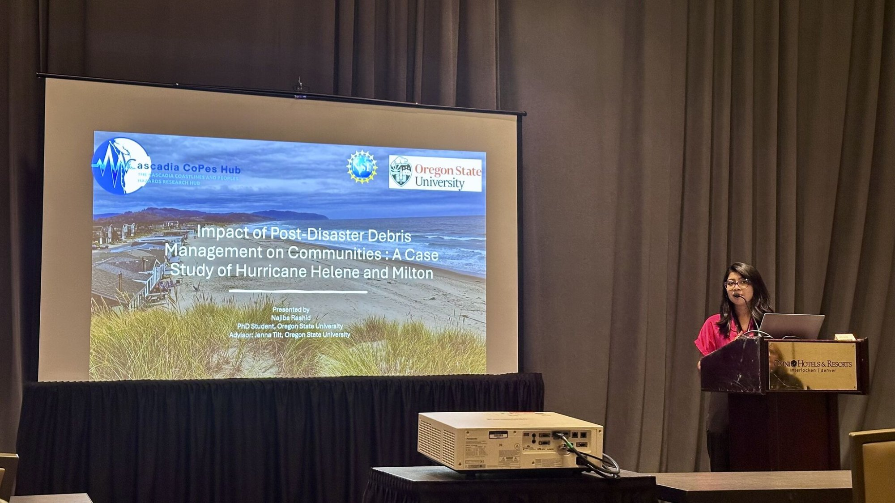
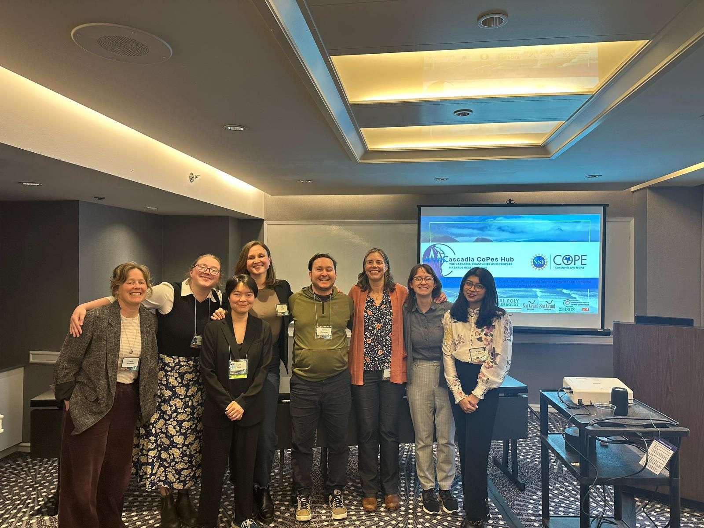
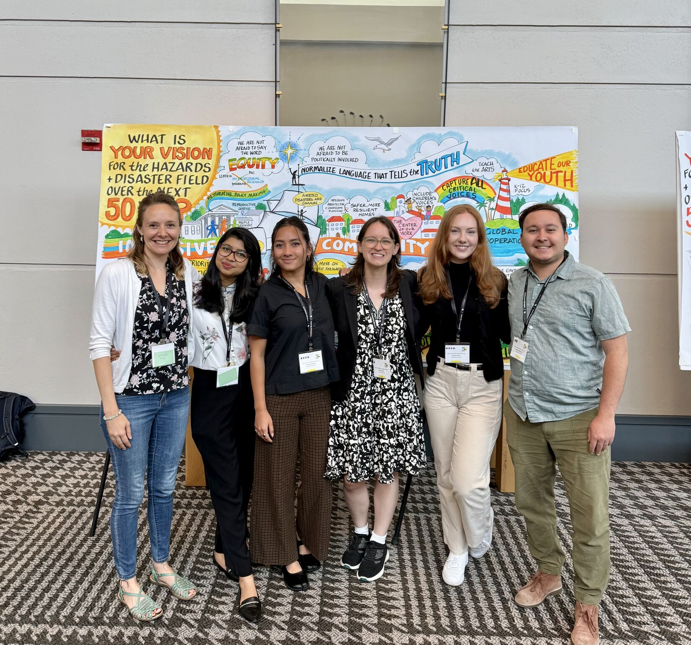

I am Najiba Rashid, a PhD candidate in Geography and Geospatial Science at Oregon State University. My work focuses on using GIS, remote sensing, and mixed methods to understand climate risk, disaster debris management, and community resilience in coastal and urban areas. In my free time, I enjoy hiking and reading books.
Oregon State University
University of Dhaka, Bangladesh
Khulna University of Engineering & Technology
Impact of Post-Disaster Debris Management on Communities
My dissertation investigates the environmental, social, and logistical impacts of post-disaster debris management on affected communities. Using Hurricane Helene and Milton (2024) as case studies, I employ a mixed-methods approach combining in-depth interviews, community surveys, geospatial analysis, and remote sensing to understand how debris management decisions shape recovery outcomes, community well-being, and environmental justice.
Cascadia CoPes Hub
A research hub focused on helping Pacific Northwest coastal communities prepare and adapt to coastal hazards through research and community engagement.
Hub WebsiteNHERI Graduate Student Council
NHERI (Natural Hazards Engineering Research Infrastructure) is a nation-wide, shared-use network of facilities tailored for the natural hazards engineering research community.
GSC WebsitePost-Disaster Debris Management: A Case Study of Hurricane Helene and Milton of Florida
Community Asset Identification for Natural Hazards Research: A View from the Pacific Northwest
Identification of Community Assets and Vulnerabilities: A Survey of Coastal Oregonians' Priorities for Natural Hazard Preparedness
Land Grabbing and Migration in a Changing Climate: Comparative Perspectives from Senegal and Cambodia
Impact of Land Use Change and Urbanization on Urban Heat Island Effect in Narayanganj City, Bangladesh
Urban Resilience in Bangladesh: Integrating Local and National Planning Processes
Arthur Parenzin Memorial Graduate Research Fellowship
Dr. Mary L. Brugo Graduate Geography Scholarship
Travel Award — Natural Hazards Research Summit

Presenting research findings at the Natural Hazard Workshop, 2025.

Presenting at SfAA, 2024.

Natural Hazards Research Summit, University of Maryland, 2024.

Cascadia Copes team at the AAG 2026.

Engaging with Oregon coastal communities at the Get Ready Fair, Clatsop County, 2023.
Download my full CV for a complete overview of my academic background, research, publications, and professional experience.
Download CV (PDF)
Email:
Location: Corvallis, Oregon, USA
Google Scholar: View Profile
LinkedIn: Connect on LinkedIn